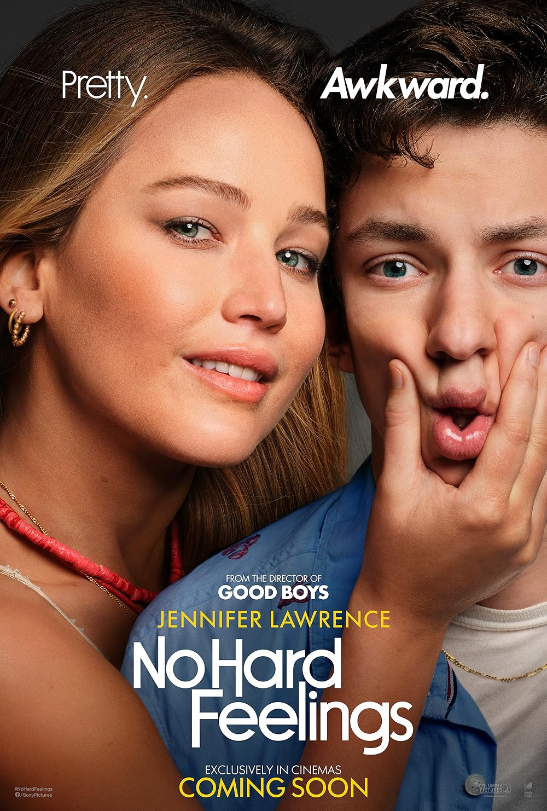
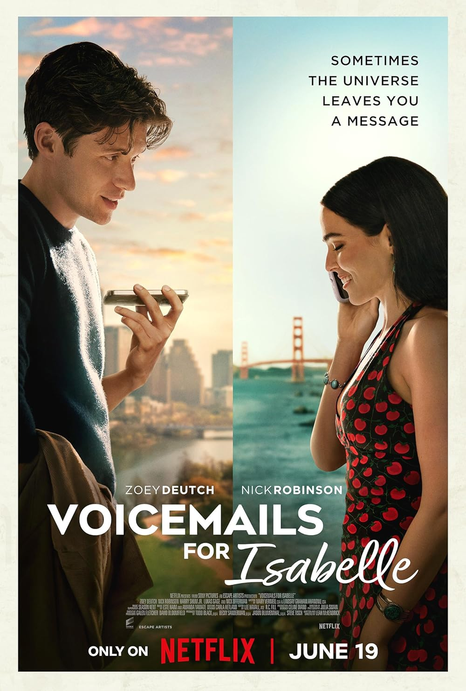
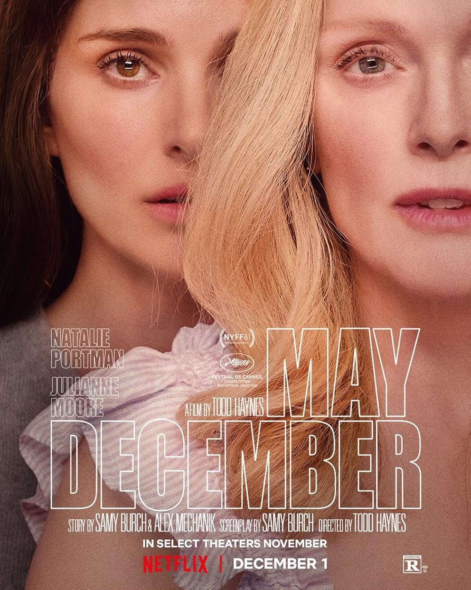
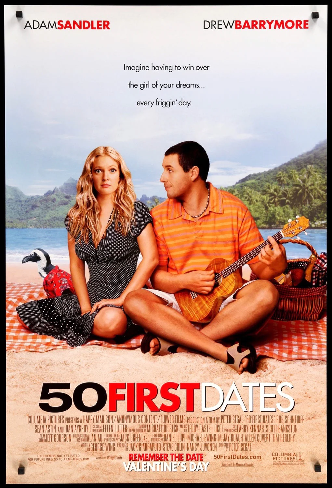
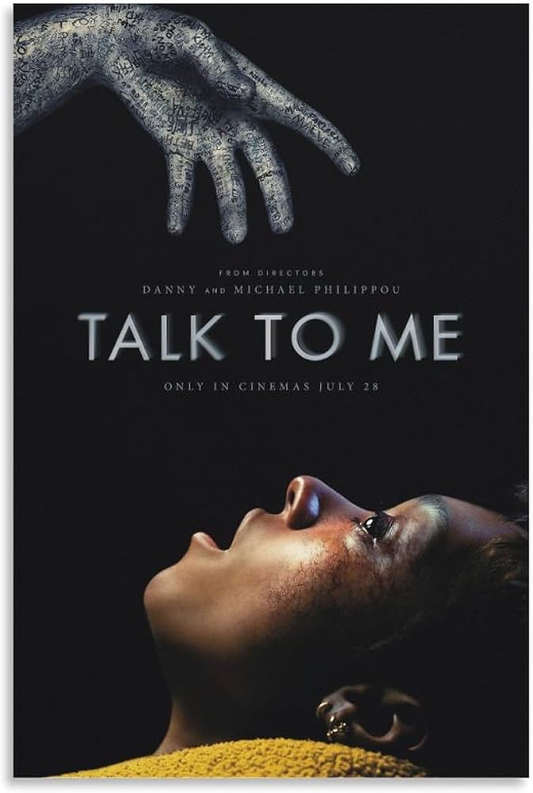
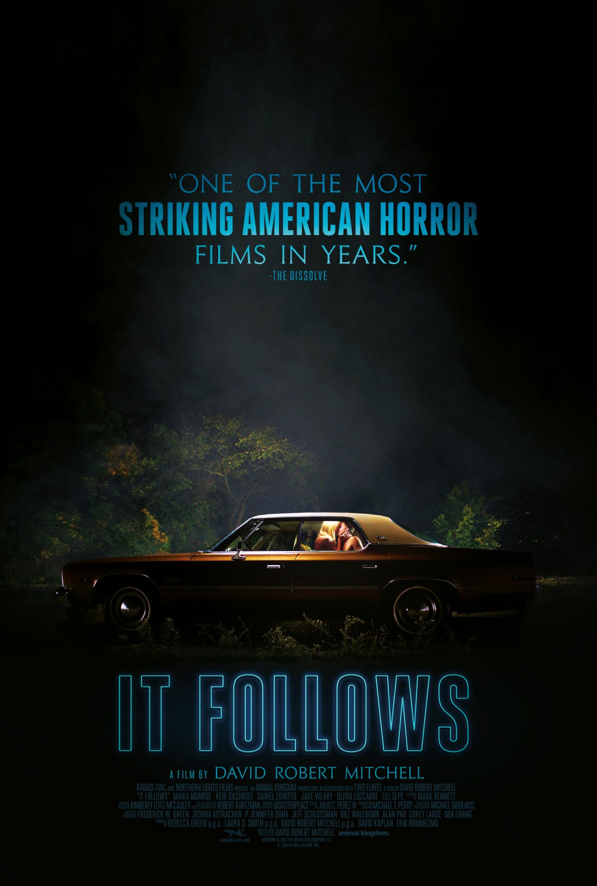

No Hard Feelings
Es una película de romance/comedia súper entretenida y muy bonita. Es sobre un muchacho que va a entrar a la universidad y una muchacha mayor que él que siempre le ha ido mal en el amor.
La puedes ver en Netflix

Voice Mails For Isabelle
Esta no la he visto, pero me gustó la descripción. Una muchacha le manda audios al número de su hermana que ya murió, pero le llegan a un muchacho y terminan conociéndose.
La puedes ver en Netflix.

May December
Esta película es súper interesante. Trata de una periodista que quiere hacer un reportaje sobre la vida de una exfamosa que se casó con un hombre mucho más joven.
La puedes ver en Amazon Prime.

50 First Dates
Si te soy sincero, nunca he sido lo suficientemente fuerte como para verla porque sé que voy a llorar mucho. Pero sé que es muy buena y creo que te puede gustar.
La puedes ver en Amazon Prime.

Talk To Me
Una película de terror sobre un grupo de adolescentes que juegan a invocar espíritus y hablar con ellos. No la he visto, pero dicen que es muy buena.
La puedes ver en Amazon Prime y HBO.

It Follows
Es una de mis películas de terror favoritas. Trata de una maldición que se va pasando de persona en persona y hace que una entidad te persiga caminando sin importar a dónde vayas.
La puedes ver en Amazon Prime.